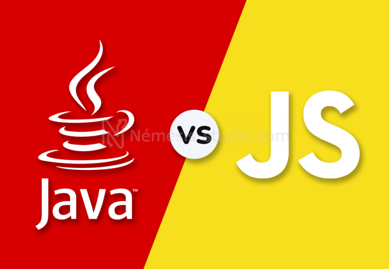

Les différences entre JAVA et JAVASCRIPT

Chaque page parlera d'un type de Java différent
Voici les différentes Pages
Le Java
Le Js
Ma Calculatrice en Js
Java permet de créer des applications qui sont exécutées sur une machine ou un navigateur virtuel tandis que le code JavaScript est exécuté uniquement sur un navigateur. Le code Java doit être compilé tandis que le code JavaScript est composé entièrement de texte.
n'hésitez pas a nous contacter si vous ne comprenez pas quelque chose